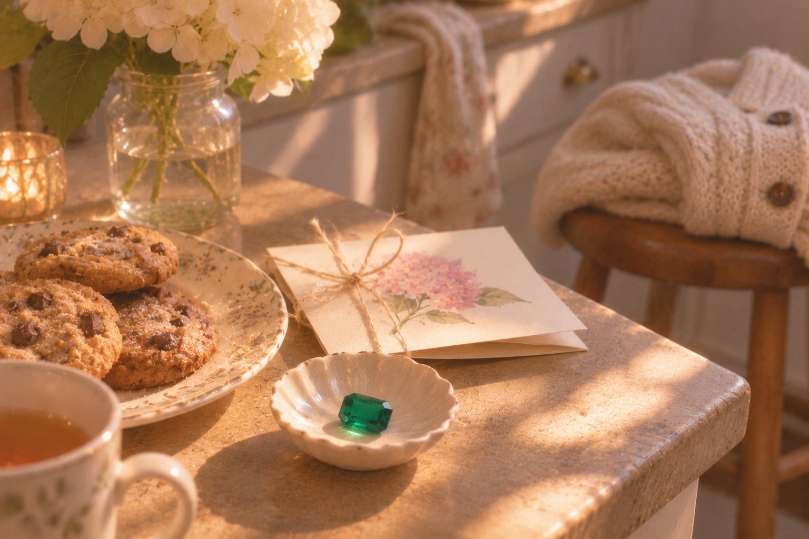

You can tell when your best friend is upset from the way she types "okay," but when someone asks how you're feeling, you suddenly forget the entire English language. Cancer (June 21 to July 22) has a birthstone called emerald. Its soft, deep green mirrors a side of yourself you rarely let anyone see.

The Cancer everyone knows
Why Does Everyone Think Cancer Is So Caring?
You're the girl who remembers everyone's birthday, notices when someone gets unusually quiet, and brings an extra sweater because somebody will probably get cold.
You remember your best friend's favorite snack better than she remembers yours.
When someone new joins the group, you're usually the first to make room for her. You know exactly how uncomfortable it feels to be the person nobody talks to.
Somehow, people end up telling you things they weren't planning to share.
Being understood feels almost effortless when someone is sitting beside you.
The Cancer nobody sees
What Are You Keeping Behind That Little Shell?
You secretly wish someone would remember the tiny details about you, too.
You want to receive a message simply because something reminded someone of you. You want to be invited without having to hint that you're free.
You've probably said "don't worry about me" while desperately hoping someone would.
In George Kunz's 1913 book The Curious Lore of Precious Stones, Cancer's stone is emerald.
Its soft, deep green mirrors that private little world where you keep your most tender wishes.
You spend so much time noticing everyone else. Imagine someone doing the same for you.
The girl beneath the shell
Why Does Cancer Retreat Into Her Shell?
You go quiet after someone makes a careless joke, and suddenly everyone thinks you're being dramatic.
Wonderful.
You've actually spent the last twenty minutes trying to decide whether your feelings are worth mentioning.
The Cancer symbol is a crab. That little shell makes a surprising amount of sense when you think about how carefully you decide who gets close.
Sometimes you pull away from the very person you wish would come closer.
People notice when you disappear into your shell. They rarely wonder what made the world outside feel uncomfortable for you.
Your own little universe
What Does Your Perfect Little World Look Like?
It's 2 a.m. You're looking through photos from last summer, smiling at pictures you didn't even remember taking.
There's a screenshot of a sweet message from someone who probably forgot sending it. You've never quite brought yourself to delete it.
You put on your favorite playlist and imagine a little apartment where everything feels familiar, warm, and entirely yours.
Maybe deep green is the color of that imaginary home you've been quietly building inside yourself.
Tonight, there's nobody to look after. The person who deserves all that tenderness is you.
When your green side wants out, Gemflow turns emerald into slow-moving light on your phone, so you can watch your inner color for once.
Emerald is the Cancer birthstone, a soft, deep green that mirrors the tender little world inside you.